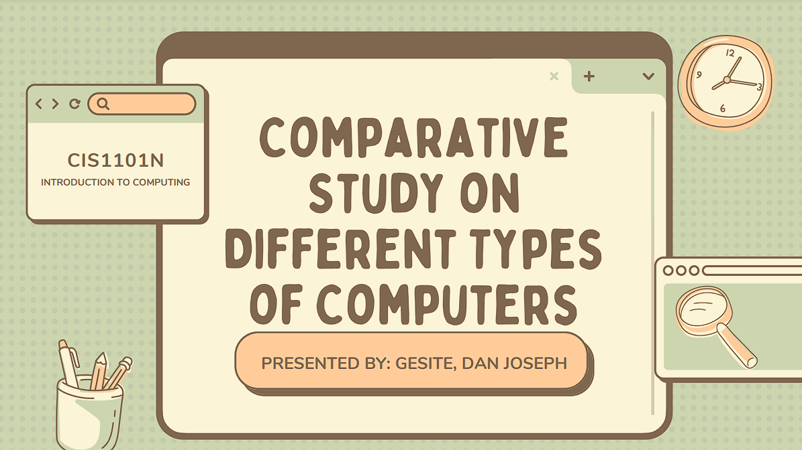

Supercomputers are extremely powerful systems capable of performing trillions of calculations per second, used in fields like scientific research and simulations. Mainframe computers handle large-scale data processing for industries such as banking and insurance, supporting mission-critical applications. Mini computers offer mid-range performance and are used by medium-sized businesses for tasks like media management. Servers provide centralized resources and services across large networks, designed for 24/7 operation with high reliability. Workstations are high-performance systems used for intensive tasks like 3D rendering, data science, and video editing. Microcomputers, on the other hand, are small, efficient devices used for everyday tasks like web browsing, word processing, and presentations.
Click the Image to proceed